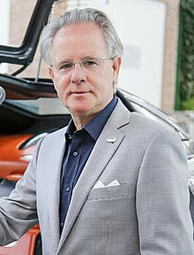
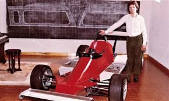
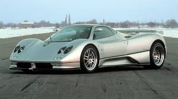

Pagani Automobilismo
Horacio Pagani

Inicios de Horacio Pagani: Horacio Pagani (nacio en Provincia de Santa Fe, Argentina; el 10 de noviembre de 1955)3 es un diseñador de automóviles argentino-italiano,primer fundador y propietario de Pagani Automobili, En su pasado trabajó para Lamborghini. Desde su infancia tuvo una pasión por el mundo automotriz, leyendo revistas, coleccionando autos a escala y hasta haciendo pequeños vehículos de madera desde los 12 años de edad. Actualmente, algunos de estos se exhiben en museos.En 1974 ingresó a la Universidad Nacional de La Plata para estudiar diseño Industrial, pero debido a los sucesos políticos en el país, se anuló el curso. Al año siguiente entró a la Universidad Nacional de Rosario a estudiar ingeniería mecánica. Frustrado por su alto conocimiento y facilidad de aprendizaje, decidió abandonar sus estudios y, a sus 22 años, debutó en el mundo de los automóviles de carreras diseñando un coche para la Fórmula 2 Renault.
Horacio gana un concurso de diseño del interior de una casa rodante, cuyo premio fue entregado por Oreste Berta. Este último lo pone en contacto con Juan Manuel Fangio quien, a su vez, le da varias cartas de presentación para trabajar en Ferrari, Lamborghini, Alfa Romeo, De Tomaso, etc. Una de las cartas decía:
“Tengo el placer de presentarle al joven señor Horacio Pagani, diseñador y constructor con deseos de progresar allí y a quien me permito recomendarle. Vería con agrado que le dieran una mano y, desde ya, le agradezco lo que puedan hacer en su favor.

Horacio en Lamborghini: En 1982, Horacio Pagani viajó a Italia para perseguir su sueño de trabajar en la industria automotriz. Aunque no pudo unirse a Ferrari porque Pininfarina controlaba el diseño, consiguió un puesto en Lamborghini, donde comenzó como obrero metalúrgico. Para 1987, ya siendo ingeniero en jefe, propuso a Ferruccio Lamborghini la compra de un autoclave para fabricar piezas en fibra de carbono para el Countach, pero su idea fue rechazada. Diciéndole que: si Ferrari no lo hacia porque nosotros si? , eso es sumado a que Lamborghini creaban tractores y en su momento cuando el dueño de lambo compro un Ferrari y tenia una falla fue con enzo Ferrari, a lo que enzo respondio que un dueño de tractores no le iba a decir como hacer su trabajo, gracias a eso Lamborghini empezó a crear autos deportivos y el resto es historia.
Horacio creando su empresa:Decidido, Pagani pidió un préstamo y fundó su propia empresa, Pagani Composite Research, en 1988, colaborando en proyectos importantes como el rediseño del Countach y el desarrollo del Lamborghini Diablo. A finales de los años 80, inició su propio proyecto de diseño, el Proyecto C8, que luego pensó en renombrar como Fangio F1 en honor al campeón de Fórmula 1, Juan Manuel Fangio, quien lo había ayudado a abrirse paso en el mundo de los autos deportivos. Con el tiempo, Horacio Pagani se consolidó como uno de los nombres más importantes en el gran turismo, pionero en el uso de la fibra de carbono y visionario del automovilismo, por lo que muchos lo consideran el Enzo Ferrari del último medio siglo.
Horacio y su primer coche(C12):El primer automóvil de producción fue nombrado Zonda C12, ya que el nombre Fangio F1 fue descartado por respeto a la memoria del piloto de carreras, quien acababa de fallecer en 1995 y se presentó por primera vez en el Salón del Automóvil de Ginebra en 1999. Posteriormente se presentaron otras variantes como: Zonda Cinque, Zonda R, Zonda HP Barchetta, etc.

hola xd